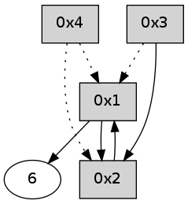

>> << IDX [start] -100 -25 -5 +0 +5 +25 +100 [340.196392059]
 Previous packets
----------------------------------------------------------------------
335.275305 beacon01(adaf) #0 coord=01,02,05,03,04,06 cycle=432.0ms assoc
-- color-indic=0 64 5b 99
335.285266 beacon02(adaf) #0 coord=01,02,05,03,04,06 cycle=432.0ms assoc 64 0a 66
335.295266 beacon05(adaf) #0 coord=01,02,05,03,04,06 cycle=432.0ms assoc 64 ac 4c
335.305267 beacon03(adaf) #0 coord=01,02,05,03,04,06 cycle=432.0ms assoc 64 30 68
335.315267 beacon04(adaf) #0 coord=01,02,05,03,04,06 cycle=432.0ms assoc 64 96 42
335.325267 beacon06(adaf) #0 coord=01,02,05,03,04,06 cycle=432.0ms assoc 64 e2 5e
335.336927 [Hello(2): seq=630 sym=3,6,1 sysInfo= stat=3:4,0,0,0/6:2,0,0,0/1:11,0,0,0]
----------------------------------------------------------------------
335.767413 beacon01(adaf) #0 coord=01,02,05,03,04,06 cycle=432.0ms assoc
-- color-indic=0 64 17 29
335.777375 beacon02(adaf) #0 coord=01,02,05,03,04,06 cycle=432.0ms assoc 64 46 d6
335.787375 beacon05(adaf) #0 coord=01,02,05,03,04,06 cycle=432.0ms assoc 64 e0 fc
335.797376 beacon03(adaf) #0 coord=01,02,05,03,04,06 cycle=432.0ms assoc 64 7c d8
335.807375 beacon04(adaf) #0 coord=01,02,05,03,04,06 cycle=432.0ms assoc 64 da f2
335.817375 beacon06(adaf) #0 coord=01,02,05,03,04,06 cycle=432.0ms assoc 64 ae ee
335.829083 [Hello(4): seq=132 sym=1 asym=3,2 sysInfo= stat=1:4,0,0,0/3:0,0,0,0/2:4,0,0,0]
335.833408 [Hello(1): seq=31 sym=2,6 sysInfo= stat=2:14,0,0,0/6:2,0,0,0]
----------------------------------------------------------------------
336.259522 beacon01(adaf) #0 coord=01,02,05,03,04,06 cycle=432.0ms assoc
-- color-indic=0 64 d3 46
336.269482 beacon02(adaf) #0 coord=01,02,05,03,04,06 cycle=432.0ms assoc 64 82 b9
336.279483 beacon05(adaf) #0 coord=01,02,05,03,04,06 cycle=432.0ms assoc 64 24 93
336.289483 beacon03(adaf) #0 coord=01,02,05,03,04,06 cycle=432.0ms assoc 64 b8 b7
336.299483 beacon04(adaf) #0 coord=01,02,05,03,04,06 cycle=432.0ms assoc 64 1e 9d
336.309483 beacon06(adaf) #0 coord=01,02,05,03,04,06 cycle=432.0ms assoc 64 6a 81
336.321165 [Hello(2): seq=631 sym=3,6,1 sysInfo= stat=3:4,0,0,0/6:2,0,0,0/1:12,0,0,0]
----------------------------------------------------------------------
336.751631 beacon01(adaf) #0 coord=01,02,05,03,04,06 cycle=432.0ms assoc
-- color-indic=0 64 8d 27
336.761592 beacon02(adaf) #0 coord=01,02,05,03,04,06 cycle=432.0ms assoc 64 dc d8
336.771593 beacon05(adaf) #0 coord=01,02,05,03,04,06 cycle=432.0ms assoc 64 7a f2
336.781593 beacon03(adaf) #0 coord=01,02,05,03,04,06 cycle=432.0ms assoc 64 e6 d6
336.791593 beacon04(adaf) #0 coord=01,02,05,03,04,06 cycle=432.0ms assoc 64 40 fc
336.801595 beacon06(adaf) #0 coord=01,02,05,03,04,06 cycle=432.0ms assoc 64 34 e0
336.812359 [Hello(1): seq=32 sym=2,6 sysInfo= stat=2:15,0,0,0/6:2,0,0,0]
336.816934 [Hello(4): seq=133 sym=1 asym=3,2 sysInfo= stat=1:5,0,0,0/3:0,0,0,0/2:5,0,0,0]
----------------------------------------------------------------------
337.243739 beacon01(adaf) #0 coord=01,02,05,03,04,06 cycle=432.0ms assoc
-- color-indic=0 64 49 48
337.253700 beacon02(adaf) #0 coord=01,02,05,03,04,06 cycle=432.0ms assoc 64 18 b7
337.263699 beacon05(adaf) #0 coord=01,02,05,03,04,06 cycle=432.0ms assoc 64 be 9d
337.273700 beacon03(adaf) #0 coord=01,02,05,03,04,06 cycle=432.0ms assoc 64 22 b9
337.283700 beacon04(adaf) #0 coord=01,02,05,03,04,06 cycle=432.0ms assoc 64 84 93
337.293701 beacon06(adaf) #0 coord=01,02,05,03,04,06 cycle=432.0ms assoc 64 f0 8f
337.305381 [Hello(2): seq=632 sym=3,6,1 sysInfo= stat=3:4,0,0,0/6:2,0,0,0/1:13,0,0,0]
----------------------------------------------------------------------
337.735847 beacon01(adaf) #0 coord=01,02,05,03,04,06 cycle=432.0ms assoc
-- color-indic=0 64 05 f8
337.745808 beacon02(adaf) #0 coord=01,02,05,03,04,06 cycle=432.0ms assoc 64 54 07
337.755808 beacon05(adaf) #0 coord=01,02,05,03,04,06 cycle=432.0ms assoc 64 f2 2d
337.765808 beacon03(adaf) #0 coord=01,02,05,03,04,06 cycle=432.0ms assoc 64 6e 09
337.775808 beacon04(adaf) #0 coord=01,02,05,03,04,06 cycle=432.0ms assoc 64 c8 23
337.785808 beacon06(adaf) #0 coord=01,02,05,03,04,06 cycle=432.0ms assoc 64 bc 3f
337.797522 [Hello(4): seq=134 asym=3,1,2 sysInfo= stat=3:0,0,0,0/1:5,0,0,0/2:6,0,0,0]
337.801835 [Hello(1): seq=33 sym=2,6 sysInfo= stat=2:0,0,0,0/6:3,0,0,0]
----------------------------------------------------------------------
338.227957 beacon01(adaf) #0 coord=01,02,05,03,04,06 cycle=432.0ms assoc
-- color-indic=0 64 c1 97
338.237917 beacon02(adaf) #0 coord=01,02,05,03,04,06 cycle=432.0ms assoc 64 90 68
338.247918 beacon05(adaf) #0 coord=01,02,05,03,04,06 cycle=432.0ms assoc 64 36 42
338.257917 beacon03(adaf) #0 coord=01,02,05,03,04,06 cycle=432.0ms assoc 64 aa 66
338.267919 beacon04(adaf) #0 coord=01,02,05,03,04,06 cycle=432.0ms assoc 64 0c 4c
338.277918 beacon06(adaf) #0 coord=01,02,05,03,04,06 cycle=432.0ms assoc 64 78 50
338.289572 [Hello(2): seq=633 sym=1 sysInfo= stat=1:14,0,0,0]
----------------------------------------------------------------------
338.720066 beacon01(adaf) #0 coord=01,02,05,03,04,06 cycle=432.0ms assoc
-- color-indic=0 64 8c 90
338.730026 beacon02(adaf) #0 coord=01,02,05,03,04,06 cycle=432.0ms assoc 64 dd 6f
338.740030 beacon05(adaf) #0 coord=01,02,05,03,04,06 cycle=432.0ms assoc 64 7b 45
338.750027 beacon03(adaf) #0 coord=01,02,05,03,04,06 cycle=432.0ms assoc 64 e7 61
338.760027 beacon04(adaf) #0 coord=01,02,05,03,04,06 cycle=432.0ms assoc 64 41 4b
338.770029 beacon06(adaf) #0 coord=01,02,05,03,04,06 cycle=432.0ms assoc 64 35 57
338.781705 [Hello(4): seq=135 asym=1,2 sysInfo= stat=1:6,0,0,0/2:7,0,0,0]
338.786366 [Hello(1): seq=34 sym=2,6 sysInfo= stat=2:1,0,0,0/6:3,0,0,0]
----------------------------------------------------------------------
339.212177 beacon01(adaf) #0 coord=01,02,05,03,04,06 cycle=432.0ms assoc
-- color-indic=0 64 48 ff
339.222137 beacon02(adaf) #0 coord=01,02,05,03,04,06 cycle=432.0ms assoc 64 19 00
339.232139 beacon05(adaf) #0 coord=01,02,05,03,04,06 cycle=432.0ms assoc 64 bf 2a
339.242138 beacon03(adaf) #0 coord=01,02,05,03,04,06 cycle=432.0ms assoc 64 23 0e
339.252138 beacon04(adaf) #0 coord=01,02,05,03,04,06 cycle=432.0ms assoc 64 85 24
339.262139 beacon06(adaf) #0 coord=01,02,05,03,04,06 cycle=432.0ms assoc 64 f1 38
339.273786 [Hello(2): seq=634 sym=1 sysInfo= stat=1:15,0,0,0]
----------------------------------------------------------------------
339.704284 beacon01(adaf) #0 coord=01,02,05,03,04,06 cycle=432.0ms assoc
-- color-indic=0 64 04 4f
339.714245 beacon02(adaf) #0 coord=01,02,05,03,04,06 cycle=432.0ms assoc 64 55 b0
339.724246 beacon05(adaf) #0 coord=01,02,05,03,04,06 cycle=432.0ms assoc 64 f3 9a
339.734245 beacon03(adaf) #0 coord=01,02,05,03,04,06 cycle=432.0ms assoc 64 6f be
339.744245 beacon04(adaf) #0 coord=01,02,05,03,04,06 cycle=432.0ms assoc 64 c9 94
339.754247 beacon06(adaf) #0 coord=01,02,05,03,04,06 cycle=432.0ms assoc 64 bd 88
339.765659 [Hello(1): seq=35 sym=2,6 sysInfo= stat=2:2,0,0,0/6:3,0,0,0]
339.769544 [Hello(4): seq=136 asym=1,2 sysInfo= stat=1:7,0,0,0/2:8,0,0,0]